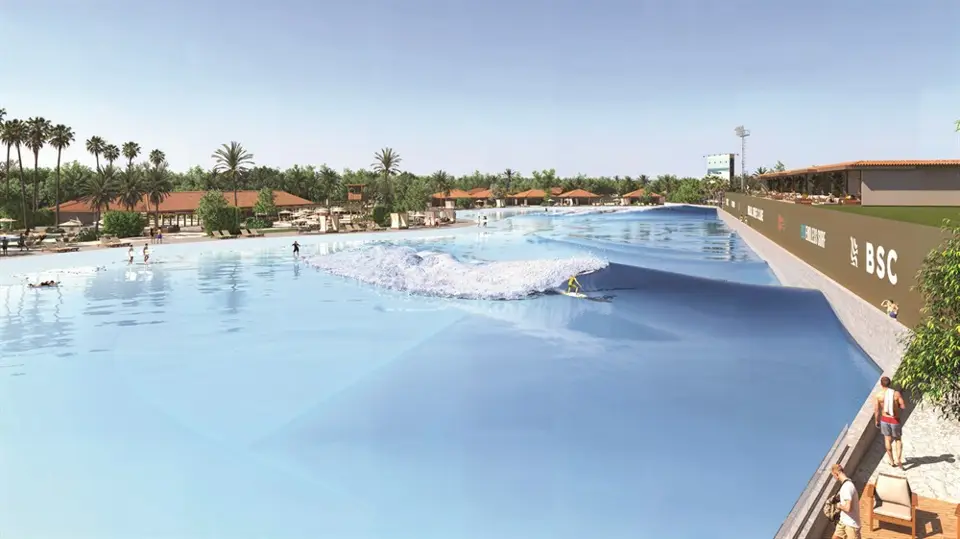

Imagens


Galeria
Imagens ilustrativas, de caráter artístico, conforme material da incorporadora.

Cotas da piscina de ondas
BSC - Aretê (Brasil Surfe Clube), localizado no exclusivo condomínio Aretê Búzios, é o primeiro clube de surfe totalmente privado do estado do Rio de Janeiro. Com estrutura moderna e ambiente reservado, foi criado para oferecer experiências únicas aos amantes do surfe e a quem busca lazer de alto padrão em um local sofisticado e conveniente.
Diferente de espaços públicos, o BSC é exclusivo para sócios, seus dependentes e convidados. O acesso restrito garante uma vivência tranquila e refinada. Convidados só podem frequentar na presença de um sócio e, no surfe, estão limitados a duas sessões anuais por CPF, mediante pagamento adicional. Sócios têm acesso completo à infraestrutura, com duas opções de títulos:
Legacy: sócio titular, cônjuge e até dois dependentes (até 27 anos); Individual: para uso pessoal e exclusivo.
A mensalidade é de R$ 500, com direito a uso integral das instalações. Sessões de surfe são cobradas à parte, conforme agendamento.
O grande diferencial do clube é sua piscina de ondas com a tecnologia Endless Surf, da empresa WhiteWater. As ondas são totalmente personalizáveis em tamanho, potência e formato, adequadas a todos os níveis – de iniciantes a atletas profissionais. Há duas modalidades principais:
Split Peak: ondas de 12 segundos (R$ 50), com entrada pelo centro da piscina; Single Peak: maior onda do Hemisfério Sul, com 25 segundos de duração (R$ 90), percorrendo toda a piscina.
Além do surfe, o BSC oferece uma infraestrutura completa de lazer e bem-estar:
Restaurante de alto padrão; SPA e academia modernos; Vestiários com saunas seca e a vapor; Piscinas recreativas e quadras esportivas; Espaço de coworking integrado ao ambiente de lazer.
Seja pela tecnologia de ponta em ondas artificiais ou pelas opções de lazer sofisticado, o Brasil Surfe Clube define um novo padrão de exclusividade no Brasil. É o destino ideal para quem valoriza luxo, privacidade e experiências inesquecíveis.
Metragens, tipologias e disponibilidade conforme material oficial da incorporadora, sujeitos a alteração sem aviso. Valores e condições confirmados na tabela vigente. Seleção e atendimento: Paulo Cotrim, CRECI-RJ 77677-F.
Imagens ilustrativas, de caráter artístico, conforme material da incorporadora.